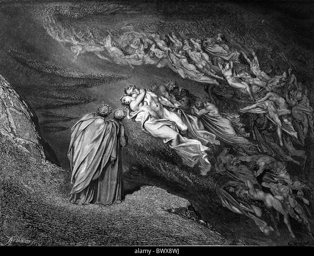
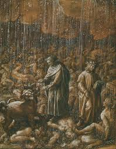
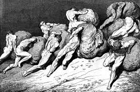
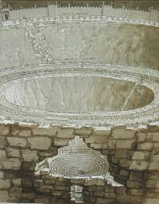
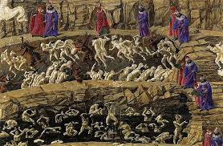
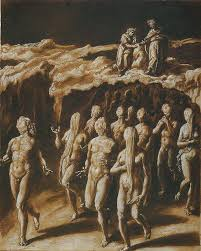
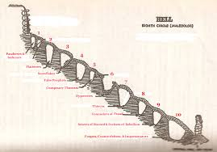
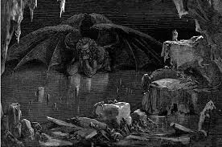

Os 9 circulos do inferno
O Inferno é a primeira parte da "Divina Comédia" de Dante Alighieri, e é formado por Nove Círculos onde sofrem punições de justiça poética, onde sofrem punições eternas de acordo com o pecado cometido. Cada um os círculos possuem diferentes punições que vão cada vez mais que se aproximam do centro, ou do último círculo, os pecados vão se intensificando cada vez mais.
1 circulo: Limbo
Aqui a única punição sofrida é a vida eterna porém separado da presença de deus, pois é o lugar que vão aqueles que nunca foram batizados ou foram virtuosos pagãos, não aceitaram o chistianismo porém nunca pecaram, aqui Dante se encontra com virgil, famoso poeta da época, que o acompanha durante toda passagem pelos círculos do inferno.
2 circulo: Luxúria
Antes de chegarem no círculo eles se encontram com minos, juiz da alma dos mortos que cometeram algum pecado. Todas as almas confessam os seus pecados, que é então sentenciado por minos que é então enrolado por uma cobra ao número correspondente ao círculo do inferno que a alma deve ir.
Aqui é representado o pedaço da luxúria, que são aqueles que são dominados pelo intenso desejo de possuir alguma coisa (prazer, relações sexuais, poder), aqui Os pecadores sofrem com intensas tempestades de ventos, assim as almas são incansavelmente assopradas. Essa punição representa a natureza instável e tempestuosa das paixões carnais.
3 circulo: Gula
Ao chegarem a esse círculo Dante e Virgil se deparam com o cão cerberus e punidor desse círculo, ele é a Representa um cão com 3 cabeças e faz papel de guarda.
Aqui é representado o pecado da gula, que são aqueles que possuem um desejo de consumo excessivo de comidas bebidas e qualquer outro tipo de vício em consumação, aqui os pecadores são mergulhados em uma lama fétida e atormentados por uma chuva incessante de gordura, que simboliza a degradação e a sujeira dos gulosos.
4 circulo: Ganância
Na entrada desse círculo fica plutus, a divindade da fortuna, que grita a frase "Pape Satàn, pape Satàn Aleppe" para Dante e Virgil, que passam sem interagir com Plutus.
Aqui é representado o pecado da ganância, que são aqueles que tanto acumulham excessivamente, como aqueles que fazem gastam sem limites, assim aqueles que valorizam o excesso e o status do dinheiro sobre tudo. Aqui os pecadores são forçados a empurrarem grandes sacos pesados amarrados em cada alma, que são forçados a empurrarem eles por aí, se trombando uns com os outros. Que simboliza a inutilidade e a futilidade das riquezas materiais e do desperdício.
5 circulo: Ira
Aqui é representado o pecado da ira, onde aqueles que se tornam incontroláveis e não-cooperativos e que respondem com agressões ou insultos. Aqui os pecadores que foram julgados pela ira lutam na superfície do imenso rio Styx (estige), enquanto aqueles que foram tomados pela melancolia afundam. Que simboliza a luta eterna e a auto imposição da miséria emocional. Enquanto o barqueiro Phlegyas anda em um barco a remo pela superficie, ele carrega Dante e Virgil até a cidade de dis.
Essa é a representação da cidade dentro do círculo da ira, onde é afunilado quanto mais os círculos chegam até o centro do inferno, quando Dante e Virgil tentam passar para o próximo círculo, eles são impedidos por um trio e a medusa que negam a passagem dos humanos, porém um anjo que supostamente veio do céu dá uma bronca nos quatro que impediam a dupla, podendo ser visto como a entrada aos círculos dos pecados ainda não compreendidos completamente pela filosofia ou pela humanidade.
6 circulo: Heresia
Aqui é representado o pecado da heresia, onde são punidos aqueles que desafiam e negam as doutrinas cristãs. Aqui os pecadores são presos em túmulos em chamas que simboliza o castigo pela distorção ou negação da verdade Divina.
7 circulo: Violência
O círculo da violência é dividido em 3 círculos, ou andares, onde é um precipício defendido por um minotauro. Esse andar sofreu grandes alterações devido a morte de jesus cristo já que ocorreu um grande terremoto que chocou a terra.
- Violência contra os outros: Submersos em um rio de sangue fervente.
- Violência contra si mesmos (suicidas): Transformados em árvores torcidas e despedaçados por harpias.
- Violência contra Deus (blasfêmia), natureza (sodomitas) e arte (usuários): Sodomitas vagam sob uma chuva de fogo, blasfemadores deitados em areia ardente.
O simbolismo de cada punição é, em ordem,primeiramente o rio de sangue fervente possui diferente simbolismo para cada alma, já que aqueles que mais mataram sofrem mais do calor do sangue derramado por seus vizinhos, o segundo representa a transformação em objetos inanimados por cometerem um insulto ao corpo ao terem cometido suicídio, por fim o terceiro simboliza as ações que faltam de naturalidade, assim o deserto insuportável faria a chuva ser uma benção, porém essa chuva pela falta de natureza dos pecadores descende em fogo.
8 circulo: Fraude
Aqui é representado todos os pecados relacionados a fraude, ou a ação de enganar alguém em benefício próprio, é composto por 10 andares, onde cada um sofre uma punição completamente diferente, os pecados são:
  - Sedutores e rufiões: Chicoteados por demônios.
- Aduladores: Imersos em excrementos.
- Simoníacos: Enterrados de cabeça para baixo com os pés em chamas
- Adivinhos: Cabeças viradas para trás.
- Corruptos: Mergulhados em piche fervente.
- Hipócritas: Vestidos de capas de chumbo dourado.
- Ladrões: Atacados por serpentes.
- Conselheiros fraudulentos: Envoltos em chamas.
- Seminadores de discórdia: Mutilados continuamente.
- Falsificadores: Acometidos por doenças horríveis.
9 circulo: Traição
Aqui é representado o pecado da traição, que são aqueles que negam tanto o amor de deus quanto o conforto da humanidade, nesse círculo fica um lago congelado enorme, onde são separados 4 zonas diferentes nomeadas a partir dos maiores traidores da história. O gelo simboliza a frieza e a ausência de amor e humanidade nos traidores.
- Caina: Traidores da família, congelados até o pescoço no gelo.
- Antenora: Traidores da pátria, também congelados no gelo.
- Ptolomeia: Traidores dos hóspedes, deitados no gelo com apenas o rosto visível.
- Judecca: Traidores dos benfeitores, completamente enterrados no gelo.
Aqui é o centro do inferno, onde lúcifer cuida dos mais proeminente dos traidores, Marcus Junius Brutus, Gaius Cassius Longinus e Judas Iscariot.
